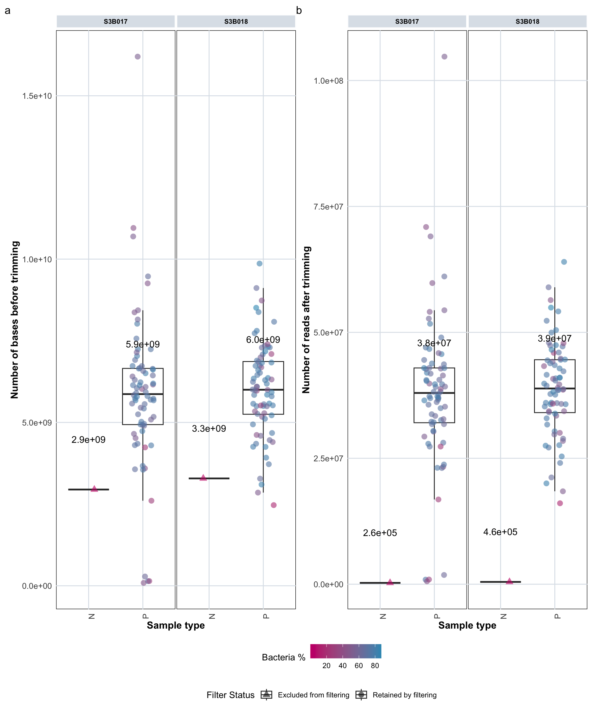

7 Sequencing Statistics
7.2 Number of Bases and Reads
This section visualizes sequencing output metrics including total bases and read counts before and after trimming.
7.2.1 Total Bases Before Trimming
# Calculate summary statistics for total bases before trimming
var <- "total_bases_before_trim"
summary_stats_bases <- plot_data_stats_macro %>%
group_by(type_simple, batch) %>%
summarise(
median = median(.data[[var]], na.rm = TRUE),
IQR = IQR(.data[[var]], na.rm = TRUE),
Q1 = quantile(.data[[var]], 0.25, na.rm = TRUE),
Q3 = quantile(.data[[var]], 0.75, na.rm = TRUE),
.groups = "drop"
) %>%
mutate(label_txt = paste0("", format(median, scientific = TRUE, digits = 2)))
# Display summary statistics table with proper formatting
knitr::kable(summary_stats_bases, digits = 2, caption = "Summary statistics (median and IQR) for total bases before trimming by sample type and batch")| type_simple | batch | median | IQR | Q1 | Q3 | label_txt |
|---|---|---|---|---|---|---|
| N | S3B017 | 2946476400 | 0 | 2946476400 | 2946476400 | 2.9e+09 |
| N | S3B018 | 3286578000 | 0 | 3286578000 | 3286578000 | 3.3e+09 |
| P | S3B017 | 5867955600 | 1720082175 | 4934269725 | 6654351900 | 5.9e+09 |
| P | S3B018 | 6001612350 | 1613784075 | 5251181550 | 6864965625 | 6.0e+09 |
# Create boxplot showing total bases before trimming
# Color indicates bacteria percentage, shape indicates filtering status
barplot_bases <- plot_data_stats_macro %>%
ggplot(aes(x = type_simple, y = total_bases_before_trim,
color = bacteria_percentage, shape = filter_status)) +
labs(x = "Sample type", y = "Number of bases before trimming") +
scale_color_gradient(low = "#c90076", high = "#3598bf", name = "Bacteria %") +
scale_shape_manual(values = c("Retained by filtering" = 16, "Excluded from filtering" = 17),
name = "Filter Status") +
geom_boxplot(outlier.shape = NA) +
geom_jitter(width = 0.2, alpha = 0.6, size = 3) +
facet_nested(. ~ batch, scales = "free", space = "free") +
theme_minimal() +
custom_ggplot_theme +
theme(axis.text.x = element_text(angle = 90, hjust = 1),
plot.margin = margin(0.2, 0.2, 0.2, 0.2)) +
# Add median values as text labels
geom_text(
data = summary_stats_bases,
aes(x = type_simple, y = median, label = label_txt),
inherit.aes = FALSE,
vjust = -7,
size = 4, alpha = 1, color = "black"
)
# Display the plot (commented out - used in combined plot below)
# barplot_bases7.2.2 Total Reads After Trimming
# Calculate summary statistics for total sequences after trimming
var <- "total_sequences_after_trim"
summary_stats_reads <- plot_data_stats_macro %>%
group_by(type_simple, batch) %>%
summarise(
median = median(.data[[var]], na.rm = TRUE),
IQR = IQR(.data[[var]], na.rm = TRUE),
Q1 = quantile(.data[[var]], 0.25, na.rm = TRUE),
Q3 = quantile(.data[[var]], 0.75, na.rm = TRUE),
.groups = "drop"
) %>%
mutate(label_txt = paste0("", format(median, scientific = TRUE, digits = 2)))
# Display summary statistics table with proper formatting
knitr::kable(summary_stats_reads, digits = 2, caption = "Summary statistics (median and IQR) for total sequences after trimming by sample type and batch")| type_simple | batch | median | IQR | Q1 | Q3 | label_txt |
|---|---|---|---|---|---|---|
| N | S3B017 | 264082 | 0 | 264082 | 264082 | 2.6e+05 |
| N | S3B018 | 455342 | 0 | 455342 | 455342 | 4.6e+05 |
| P | S3B017 | 37966750 | 10875524 | 32059032 | 42934556 | 3.8e+07 |
| P | S3B018 | 38856558 | 10501634 | 34066491 | 44568124 | 3.9e+07 |
# Create boxplot showing total sequences after trimming
barplot_reads_after <- plot_data_stats_macro %>%
ggplot(aes(x = type_simple, y = total_sequences_after_trim,
color = bacteria_percentage, shape = filter_status)) +
labs(x = "Sample type", y = "Number of reads after trimming") +
scale_color_gradient(low = "#c90076", high = "#3598bf", name = "Bacteria %") +
scale_shape_manual(values = c("Retained by filtering" = 16, "Excluded from filtering" = 17),
name = "Filter Status") +
geom_boxplot(outlier.shape = NA) +
geom_jitter(width = 0.2, alpha = 0.6, size = 3) +
facet_nested(. ~ batch, scales = "free", space = "free") +
theme_minimal() +
custom_ggplot_theme +
theme(axis.text.x = element_text(angle = 90, hjust = 1),
plot.margin = margin(0.2, 0.2, 0.2, 0.2)) +
# Add median values as text labels
geom_text(
data = summary_stats_reads,
aes(x = type_simple, y = median, label = label_txt),
inherit.aes = FALSE,
vjust = -7,
size = 4, alpha = 1, color = "black"
)
# Display the plot (commented out - used in combined plot below)
# barplot_reads_after7.2.3 Combined Visualization
# Combine both plots for side-by-side comparison
barplot_bases + barplot_reads_after +
plot_annotation(tag_levels = 'a') +
plot_layout(guides = "collect") &
theme(legend.position = "bottom", legend.box = "vertical")
7.2.4 Low Data Samples
# Identify samples that produced low data but were retained by 30% coverage filtering
# Four samples did not produce a lot of data, but were retained by the 30% coverage filtering.
low_data_samples <- plot_data_stats_macro %>%
filter(microsample %in% c("D300995", "D301068", "D300970", "D300968", "D300989", "D300994")) %>%
select(microsample, type_simple, filter_status,
total_bases_before_trim, total_sequences_after_trim,
animal_breed, animal, treatment_expl, age)
# Display sample information
print(low_data_samples)# A tibble: 6 × 9
microsample type_simple filter_status total_bases_before_trim total_sequences_after_trim animal_breed animal treatment_expl age
<chr> <chr> <chr> <dbl> <dbl> <chr> <chr> <fct> <fct>
1 D300968 P Retained by filtering 141680400 911398 layer F091 Pathogen 7
2 D300970 P Retained by filtering 89089500 575038 layer F095 Pathogen 7
3 D300989 P Retained by filtering 144163800 933822 layer F137 Control 5
4 D300994 P Retained by filtering 284325000 1833246 layer F147 Control 14
5 D300995 N Excluded from filtering 2946476400 264082 LabNegControl F000 <NA> <NA>
6 D301068 N Excluded from filtering 3286578000 455342 LabNegControl F000 <NA> <NA> 7.3 Percentage of Reads: Mapped, Trimmed, and Unmapped
This section shows the distribution of reads across different categories: mapped to bacteria, mapped to chicken (host), unmapped, and removed by trimming.
# Calculate summary statistics for read percentage categories
var <- "counts"
summary_stats_percentage <- tidy_plot_data_stats_counts_prc_macro %>%
filter(mapping_status %in% c("bacteria_percentage", "chicken_percentage",
"unmapped_percentage", "trimmed_reads_percentage")) %>%
group_by(type_simple, batch, label) %>%
summarise(
Q1 = quantile(.data[[var]], 0.25, na.rm = TRUE),
median = median(.data[[var]], na.rm = TRUE),
Q3 = quantile(.data[[var]], 0.75, na.rm = TRUE),
.groups = "drop"
) %>%
mutate(
label_txt = paste0(
"", round(median, 1), "%",
" [", round(Q1, 1), "–", round(Q3, 1), "]"
)
)
# Display summary statistics table with proper formatting
knitr::kable(summary_stats_percentage, digits = 2, caption = "Summary statistics (median and IQR) for read percentage by sample type and batch")| type_simple | batch | label | Q1 | median | Q3 | label_txt |
|---|---|---|---|---|---|---|
| N | S3B017 | Bacteria | 0.26 | 0.26 | 0.26 | 0.3% [0.3–0.3] |
| N | S3B017 | Chicken | 0.21 | 0.21 | 0.21 | 0.2% [0.2–0.2] |
| N | S3B017 | Unmapped | 86.72 | 86.72 | 86.72 | 86.7% [86.7–86.7] |
| N | S3B017 | Removed | 98.66 | 98.66 | 98.66 | 98.7% [98.7–98.7] |
| N | S3B018 | Bacteria | 0.08 | 0.08 | 0.08 | 0.1% [0.1–0.1] |
| N | S3B018 | Chicken | 0.10 | 0.10 | 0.10 | 0.1% [0.1–0.1] |
| N | S3B018 | Unmapped | 53.03 | 53.03 | 53.03 | 53% [53–53] |
| N | S3B018 | Removed | 97.92 | 97.92 | 97.92 | 97.9% [97.9–97.9] |
| P | S3B017 | Bacteria | 58.36 | 68.21 | 75.45 | 68.2% [58.4–75.4] |
| P | S3B017 | Chicken | 5.92 | 14.01 | 26.07 | 14% [5.9–26.1] |
| P | S3B017 | Unmapped | 14.46 | 16.89 | 17.89 | 16.9% [14.5–17.9] |
| P | S3B017 | Removed | 2.77 | 3.05 | 3.33 | 3% [2.8–3.3] |
| P | S3B018 | Bacteria | 58.42 | 74.17 | 79.65 | 74.2% [58.4–79.6] |
| P | S3B018 | Chicken | 2.07 | 8.33 | 27.10 | 8.3% [2.1–27.1] |
| P | S3B018 | Unmapped | 13.14 | 16.63 | 18.24 | 16.6% [13.1–18.2] |
| P | S3B018 | Removed | 2.65 | 2.95 | 3.08 | 3% [2.6–3.1] |
# Create boxplot showing percentage distribution of different read categories
boxplot_reads_prc_1 <- tidy_plot_data_stats_counts_prc_macro %>%
filter(mapping_status %in% c("bacteria_percentage", "chicken_percentage",
"unmapped_percentage", "trimmed_reads_percentage")) %>%
ggplot(aes(x = batch, y = counts, color = label)) +
geom_boxplot(outlier.shape = NA) +
geom_jitter(width = 0.05, alpha = 0.5) +
scale_color_manual(values = color_palette_tidy_plot_data_stats_counts) +
facet_nested(type_simple ~ label, scales = "fixed", space = "fixed", switch = "y") +
labs(x = NULL, y = "Reads %") +
guides(color = "none") + # Remove legend
theme_minimal() +
custom_ggplot_theme +
theme(panel.spacing = unit(0.3, "lines"),
plot.margin = margin(0.2, 0.2, 0.2, 0.2)) +
scale_y_continuous(expand = expansion(mult = c(0.05, 0.15))) +
# Add median and IQR text labels
geom_text(
data = summary_stats_percentage,
aes(x = batch, y = median, label = label_txt),
inherit.aes = FALSE,
vjust = -1.5,
size = 3, alpha = 1, color = "black"
)
# Display the plot (commented out - used in combined plot)
# boxplot_reads_prc_17.4 Composition of Reads vs. References
This section shows the relative and absolute composition of reads mapping to different references (bacteria, chicken/host, etc.) for each sample.
7.4.1 Relative Composition (Proportions)
# Create stacked barplot showing relative proportions of read types per sample
barplot_1 <- tidy_plot_data_stats_counts_macro %>%
ggplot(aes(x = counts, y = microsample, fill = label)) +
geom_bar(stat = "identity", colour = "white", linewidth = 0.1, position = "fill") +
scale_fill_manual(values = color_palette_tidy_plot_data_stats_counts, name = "Read type") +
labs(x = "Proportion", y = "Samples", fill = "Read type") +
facet_nested(type_simple + batch ~ ., scales = "free", space = "free", switch = "y") +
custom_ggplot_theme +
theme(axis.text.x = element_text(angle = 90, hjust = 1),
axis.text.y = element_blank(),
legend.position = "bottom") +
ggtitle("Relative composition of reads")
# Display the plot (commented out - used in combined plot)
# barplot_17.4.2 Absolute Composition (Counts)
# Create stacked barplot showing absolute counts of read types per sample
barplot_2 <- tidy_plot_data_stats_counts_macro %>%
ggplot(aes(x = counts, y = microsample, fill = label)) +
geom_bar(stat = "identity", colour = "white", linewidth = 0.1) +
scale_fill_manual(values = color_palette_tidy_plot_data_stats_counts, name = "Read type") +
labs(x = "Counts", y = "Samples", fill = "Read type") +
facet_nested(type_simple + batch ~ ., scales = "free", space = "free", switch = "y") +
custom_ggplot_theme +
theme(axis.text.x = element_text(angle = 90, hjust = 1),
axis.text.y = element_blank(),
legend.position = "bottom",
plot.margin = margin(0.2, 0.2, 0.2, 0.2)) +
ggtitle("Absolute composition of reads")
# Display the plot (commented out - used in combined plot)
# barplot_2